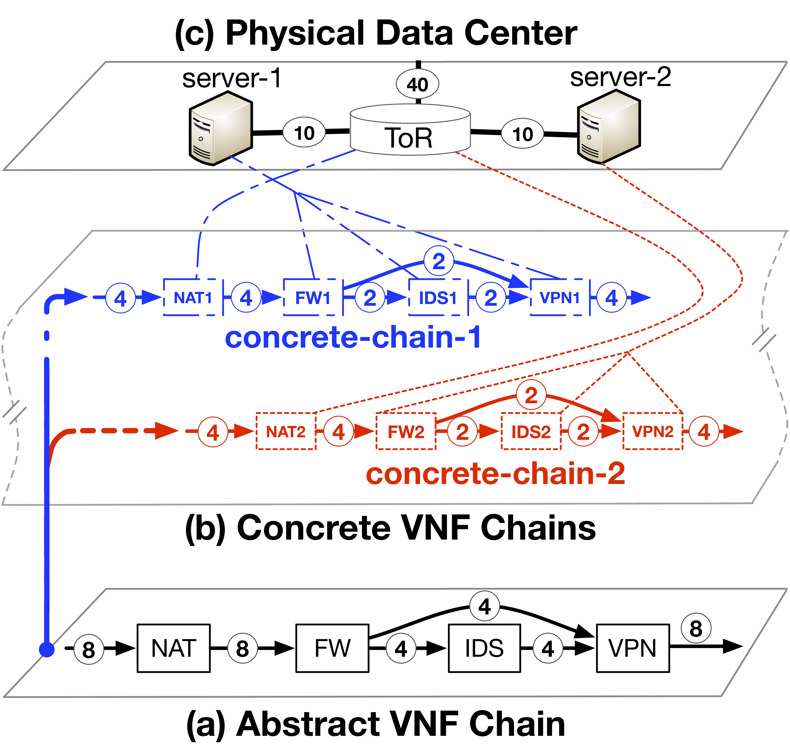
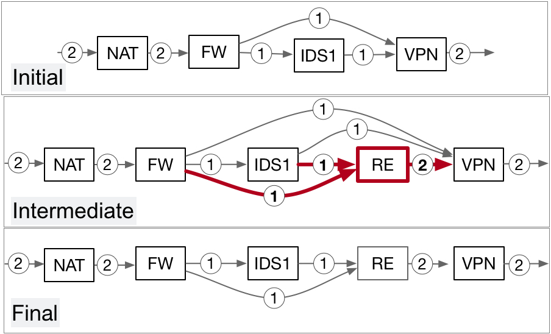
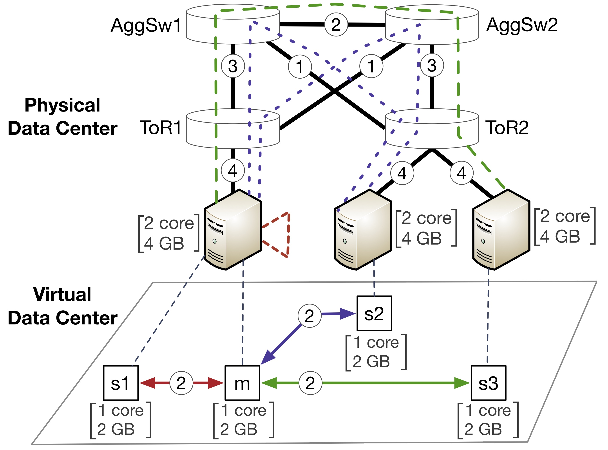

|  | VNF Chain Abstraction for Cloud Service Providers We propose VNF chain abstraction to decouple a tenant's view of the VNF chain from the cloud provider's implementation. We motivate the benefits of such an abstraction for the cloud provider as well as the tenants, and outline the challenges a cloud provider needs to address to make the chain abstraction practical. We describe the design requirements and report on our initial prototype. |
|
 |
VNF Chain Allocation and Management at Data Center Scale Offloading enterprise packet processing to the cloud is increasingly common. In this work, we propose a narrow API for tenants to manage VNF chains outsourced to the cloud. We also develop locality-aware chain scheduling algorithm, called NetPack, to implement the API while achieving high datacenter utilization for the cloud provider. We prototype a system, called Daisy, to demonstrate the feasibility of the algorithm and API. On a Facebook DC topology with 3072 servers Daisy's algorithm scheduled chains with 10 NFs in under 0.8 seconds on average while fully utilizing the network. This is 82x faster than a theoretically complete, constraint-solver-based chain placement engine. |
|
 |
NetSolver: Scalable Virtual Data Center Allocation NetSolver is an SMT-based VDC allocation tool for multi-path VDC allocation with end-to-end bandwidth guarantees. It scales to data centers with 1,000 or more servers, and can make allocations quickly enough to be applied in practice, while simultaneously improving data center utilization relative to previous work. |